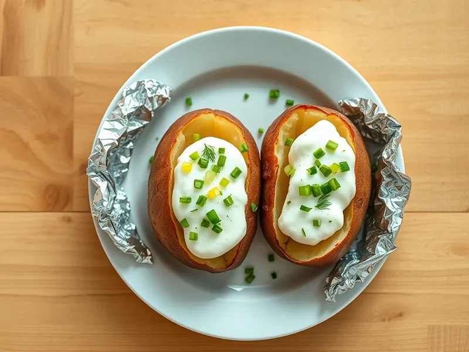

Картофель, запечённый целиком в фольге, со сметаной
Крупные картофелины, запечённые в фольге и поданные со сметаной и зеленью
65 мин4 порц.319 ккал на порциюБ 6 · Ж 15 · У 40Русская кухня
Открыть в приложении: порции, таймеры, список покупок
Продукты на 4 порц.
- Картофель4 шт
- Растительное масло1 ст. л.
- Соль1 ч. л.
- Сливочное масло20 г
- Сметана 20%5 ст. л.
- Укроп10 г
- Зелёный лук15 г
Как готовить
- Разогрейте духовку до 200 °C (сильный жар). Тщательно вымойте крупные картофелины щёткой и обсушите.
- Наколите каждую вилкой в 4-5 местах, смажьте маслом и посыпьте солью.
- Заверните каждую картофелину в фольгу блестящей стороной внутрь и выложите на решётку.
- Запекайте 50-60 минут, пока картофель не станет мягким: зубочистка через фольгу входит без усилия.
- Смешайте сметану с рубленым укропом и зелёным луком, слегка посолите.
- Разверните фольгу, надрежьте картофелины крестом, слегка сожмите с боков, положите внутрь кусочек сливочного масла и ложку сметаны.
Совет. На природе картофель в фольге закапывают в угли без открытого огня на 40-50 минут.